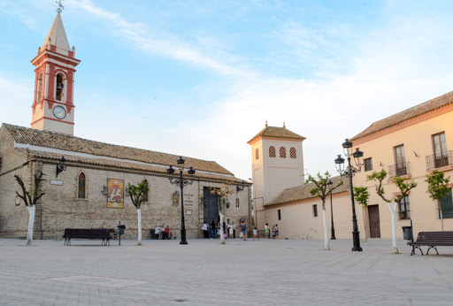

Espartinas


-
ODS 11: ciudades y comunidades sostenibles
El principal problema relacionado con este ODS es que el transporte público en Espartinas es bastante limitado y no hay suficientes combinaciones de autobuses para facilitar los desplazamientos. Esto provoca que muchas personas tengan que utilizar el coche, lo que fomenta la contaminación. Por ello, sería necesario mejorar el transporte público y facilitar los desplazamientos a pie o en bicicleta.
-
ODS 13: acción por el clima
El principal problema relacionado con este ODS es la contaminación atmosférica provocada por el uso excesivo de vehículos privados en Espartinas. Esto contribuye al aumento de las emisiones de gases de efecto invernadero y al cambio climático. Por eso sería necesario fomentar el uso del transporte público, reducir las emisiones contaminantes y promover hábitos más sostenibles, como caminar o utilizar la bicicleta.
Castilleja de la Cuesta



-
ODS 11: ciudades y comunidades sostenibles
El principal problema relacionado con este ODS es la falta de espacios de aparcamiento y la gran cantidad de vehículos que circulan por algunas zonas de Castilleja de la Cuesta. Esto provoca atascos y dificultades para desplazarse, especialmente en las horas de mayor tráfico. Por eso sería necesario mejorar la organización del tráfico, fomentar el transporte público y crear espacios más accesibles para los peatones.
-
ODS 12: produccion y consumo responsable
El principal problema relacionado con este ODS es la generación de residuos y el consumo excesivo de envases y plásticos en el municipio. Esto puede provocar una mayor contaminación si no se realiza una correcta separación y gestión de los residuos. Por eso sería necesario fomentar el reciclaje, reducir el uso de plásticos y promover hábitos de consumo más responsables.